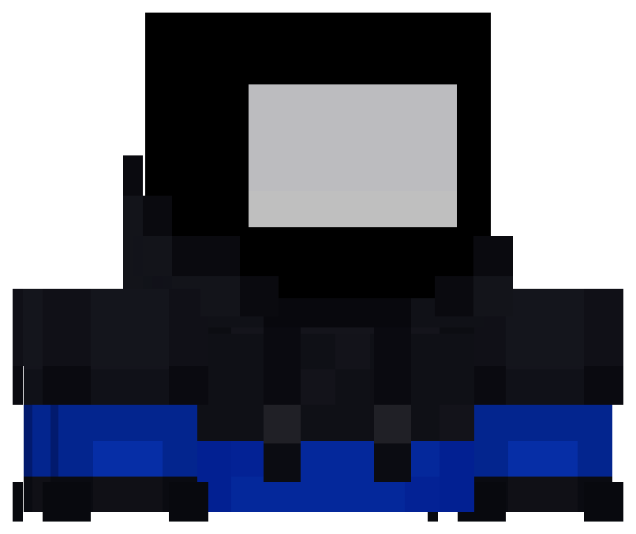

FX TOOLS
EFFECTS · FX
Inicio
Editor de skins
Crono Hardcore
Museo
FX TOOLS / RETOS
Crono
Hardcore.
◷
CRONO
HARDCORE
Clasificación
PUESTO
PARTICIPANTES
TIEMPO
INTENTOS
RETO
1
.
--:--:--
-/-
2
.
--:--:--
-/-
◆
3
.

RoesIG
1:24:38
1/1
Ultra Hardcore

 Ultra Hardcore
Ultra HardcoreUltra Hardcore
Ultra Hardcore
Ultra HardcoreUltra Hardcore